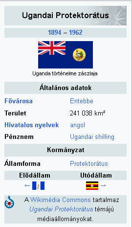

Uganda történelme alatt az Ugandai Köztársaság történelmével foglalkozunk. Földrajzi szempontból előnyös helyen fekszik, folyók és patakok kanyarognak a területén, tavak és szavannák ékesítik tájait. Az első őskori leletek Kr. e. 50 000-ből származnak. A térség első eseményei az i. e. 4. századra nyúlnak vissza, amikor rengeteg bantu törzs telepedett az ország területére, akik később királyságot alapítottak Buganda néven. Ez a királyság nagyon sokáig, 1894-ig őrizte meg tényleges szerepét, amikor angol gyarmatosítók foglalták el a területet, és kijelölték a mai országhatárokat, valamint új fővárost hoztak létre, Kampalát. A függetlenedés 1962-ben következett be. Később választásokat tartottak. Ekkor került hatalomra első ízben Milton Obote. 1971-ben Obote egyik parancsnoka, Idi Amin megdöntötte elnöke hatalmát, és 8 évig zsarnokoskodott az ország felett. 1979-ben külföldi segítséggel Amin száműzték Ugandából, és másodszorra is Obote lett az elnök. 1985-ben Obote kormányát ismét megdöntötték, fél évre. 1986 január 26-án a Bush War eredményeképpen Yoweri Museveni lett az elnök, akit 2011-ben 5. alkalommal választották meg az emberek Uganda elnökének.
Az Ugandai Protektorátus időszaka alatt azt a korszakot értjük, amikor a mai Uganda brit megszállás alatt volt. Ekkor más országok is egy nagy birodalomhoz kerültek Afrikában. Ennek köszönhetően kialakultak az országok mai határai. Persze a megszállásnak volt jó oldala is. A helyiek ekkor kereskedtek először messzi országokkal, az angol termékekhez itt sokkal olcsóbban lehetett hozzájutni, mint egy nem brit gyarmatban. A vám pedig sokkal kevesebbe került. Ez a protekcionizmus. A Brit Birodalom Kelet-Afrikai Társasága nevű szervezetet 1888-ban alapították Londonban. Ez a szervezett volt a kenyai és ugandai protektorátusok elődje. Feladata az volt, hogy felfedezzék Kelet-Afrikát, azt a világot, amelyet még az akkori ember alig ismert. Ebbe a szervezetbe önkéntesek csatlakoztak, akik később felfedezőútra indultak. Minden kalandor Mombasa kikötőjében ért partot, és onnan indult a kontinens belseje felé. Uganda vonatkozásában a felfedezőutat Henry Morton Stanley tette meg, aki találkozott Buganda vezetőjével, a kabakával is. Mivel bebarangolta közel az egész országot sok hasznos információt juttatott el a Brit Birodalomnak. A társaság 1896-ban csődbe ment. Később, 1894-ben a kabaka és Viktória királynő küldötte, Frederick Lugard kompromisszumot kötött. A megállapodás lényege az volt, hogy Buganda csata nélkül átadja területét a briteknek, cserébe a királyi trón és az ország jelképesen megmarad. A brit uralom elkezdte működését Ugandában. A főváros Entebbe lett, majd a bugandaiakkal együtt megalapították Kampalát. Kezdetben a kelet-afrikai rúpia, majd a shilling lett a hivatalos fizetőeszköz. Az ország lakosai akkor tanulták meg az angol nyelvet használni, hiszen az lett a hivatalos nyelv. Vallási szempontból is történtek változások; megépültek az első templomok és kápolnák. Az ország élére pedig kormányzókat helyeztek. Ezalatt megépült a Kampala-Mombasa vasútvonal, amely mai nagyon fontos a kereskedelemnek. Az első világháború kezdetekor a briteknek itt is volt ellensége: Német Kelet-Afrika. A feladat a német erők megsemmisítése volt. Mivel az antant jóval nagyobb fölényben volt területi és katonai viszonylatban is, a németek kelet-afrikai birtokai megszűntek.
Uganda úgy járult hozzá, hogy két fronton is támadott:a mai Ruandát elfoglalta, és Dar es-Salaamnál vereséget szenvedett. Ruandáról le kellett tenni nemzetközi nyomásra, így Ruanda kivált és létrejött Ruanda-Urundi, amelyet a belgák irányítottak. A második világháború idején Észak-Afrika kivételével csak a mai Etiópia területén voltak harcok az olaszok és a gyarmatok között. Uganda ebbe nem avatkozott bele. Az 1960-as évektől fokozatosan váltak ki a gyarmatok a birodalmakból. Ugandával ez a folyamat 1961-ben kezdődött, amikor Milton Obote megalapította pártját, az Ugandai Népi Kongresszust. Az ország a részleges függetlenséget 1962 október 9.-én kapta meg. Ekkor az ország vezetője II. Erzsébet brit királynő volt, de kineveztek egy miniszterelnököt is. Pontosan egy évvel később, 1963 október 9.-én nyerte el teljes függetlenségét az ország, amikor már elnökválasztást tartottak. Ezzel lezárult a brit uralom Ugandában.